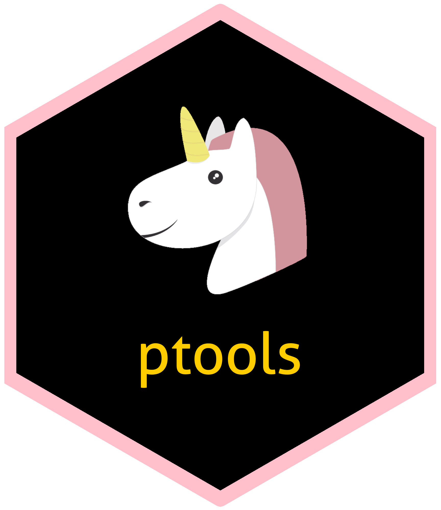

ptools 
Overview
ptools is a package to help you organize your data pipeline project. Since setting up a project follows recurrent step, a default procedure is suggested here to save time. The purpose is also to ease project upgrades and allow unit testing.
Reporting on the project construction is also important, tools to achieve this will be developped in the future.
Default scheme
Assuming you have imported your data on the HDFS, we suggest you store those data in landing/my_project_name/. Then you should create the folders raw/my_project_name/, intermediate/my_project_name/ and final/my_project_name/.
ptools functions provide tools to easily perform operations on the files while you refine the data from raw to final to finally aggregate them in Hive or Impala. See the vignette at vignettes/ptools for exemple of use.
What should comes next to complete this package
- A way to automatically document and report on the work you have done :
- how the data was gathered
- data transformation and stats on cleanness / missingness
- joins performed
- Tools to audit your pipelines :
- How to set up daily report on the action performed and their quality.